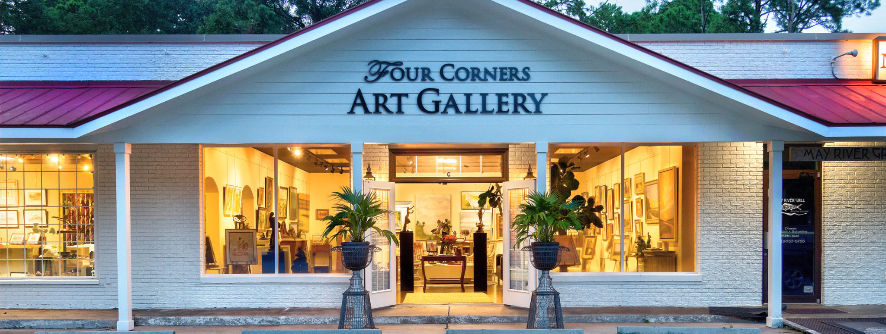

Austin, TX
Welcome to
Kay's Originals
A personally curated gallery showcasing bold, original artwork from visionary artists. Whether you're a collector, a first-time visitor, or an artist looking to share your work, there's a place for you here.
"Every piece in our gallery tells a story. Our job is to help it find the right home."
— Kay Green, Owner & Curator
Step Inside
Visit the Gallery
Tucked into Austin's arts district, our space is built for quiet discovery — original paintings, sculptures, and sketches, thoughtfully arranged and ready to be seen in person.

View on Google Maps →